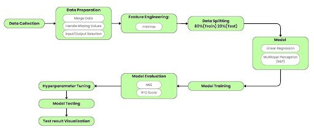
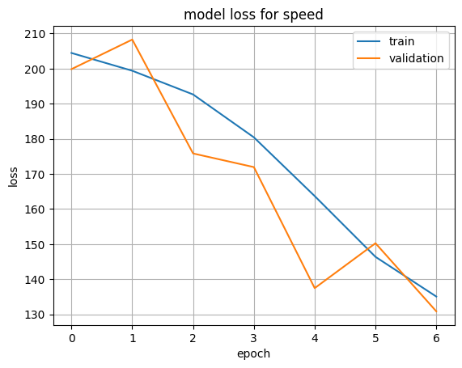
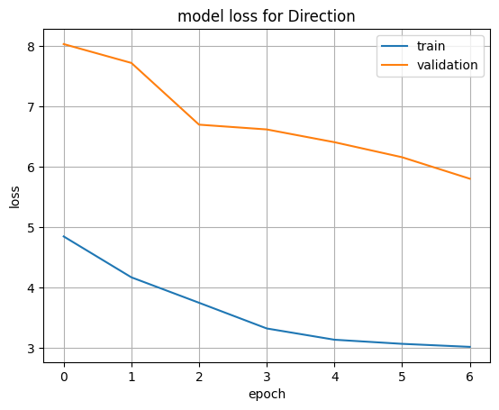
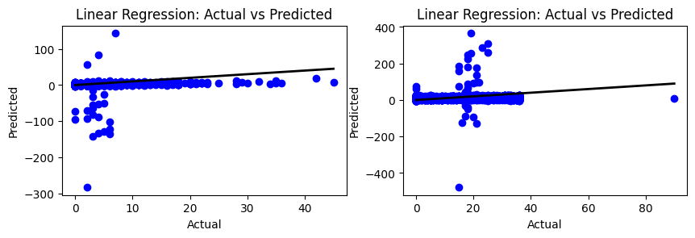

Overview
Bangladesh's coastal regions, such as Kutubdia and Cox's Bazar, have strong wind potential. This project uses historical weather data to forecast wind speed and direction, comparing a linear regression baseline with a multi-layer perceptron (MLP) neural network.
Problem statement
Wind farms need reliable wind forecasts for turbine placement and stable energy output. Physical measurement campaigns are slow and costly, so the question is whether routinely collected atmospheric data can predict wind behaviour well enough to support renewable energy site assessment.
Engineering objectives
- Prepare a clean, merged dataset from Bangladesh Meteorological Department (BMD) records.
- Predict wind speed and wind direction from pressure, humidity, rainfall and temperature.
- Compare a linear regression baseline with an MLP model using MSE and R².
System architecture
The workflow runs from data collection and preparation through feature scaling, an 80/20 train–test split, model training, evaluation and hyperparameter tuning, to testing and visualization.

Methodology
- Data: 24 years (2000–2023) of BMD records, collected every 3 hours.
- Inputs and targets: atmospheric pressure, humidity, rainfall and temperature as inputs; wind speed and wind direction as outputs.
- Preprocessing: handled missing values, merged multiple CSV files, applied min–max normalization and split the data 80/20 for training and testing.
- Models: linear regression as a baseline, and an MLP neural network built with TensorFlow/Keras.
- Evaluation: mean squared error (MSE) and R² score on the test set.
Hardware and software
Hardware
- None. This is a data and software project.
Software & tools
- Python, NumPy, Pandas
- scikit-learn (linear regression)
- TensorFlow / Keras (MLP)
- Google Colab
Implementation photographs
This is a software-only project, so there are no hardware photographs. The figures below are generated from the models.
Results



Performance metrics
Key findings
- The MLP outperformed linear regression for both wind speed and wind direction.
- The linear baseline struggled to capture the spread of the data, while the MLP's validation loss fell steadily during training.
- Data-driven models built on routine weather records can support early-stage wind resource assessment.
Links
- GitHub repository
- Reference study: Mollick, Hashmi & Sabuj (2024), Sustainable Energy Research 11(5), doi:10.1186/s40807-024-00098-z